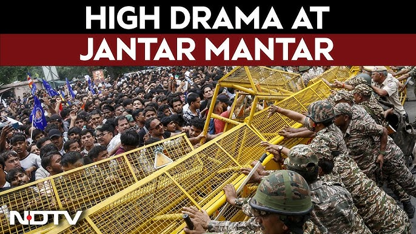
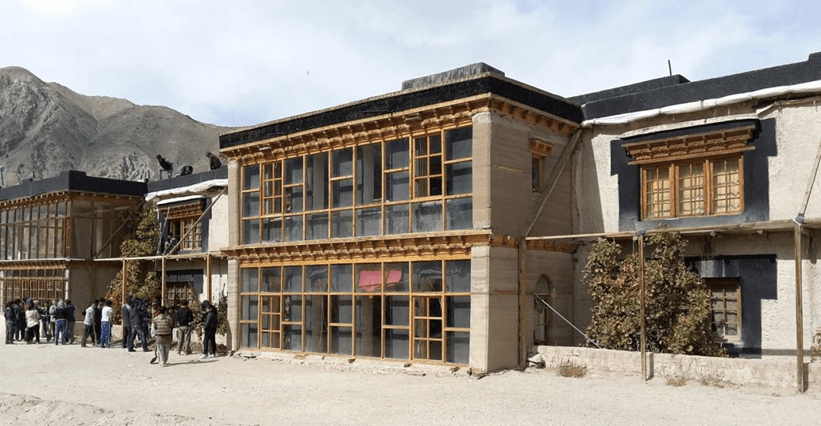
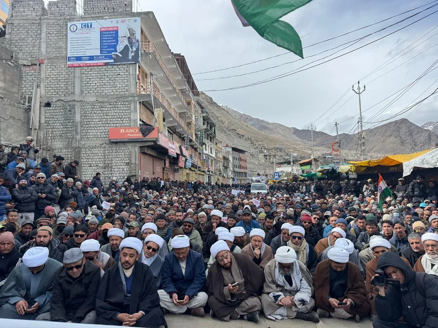
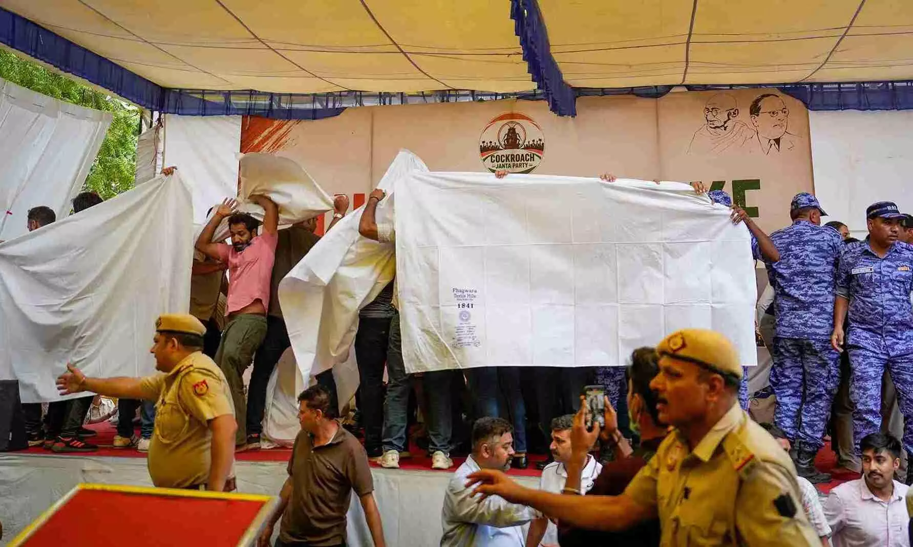
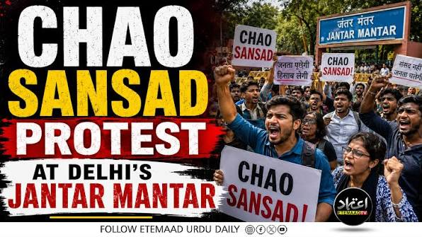

The Jantar Mantar
Epicenter
A massive examination paper leak (NEET-UG) has sparked a youth-led revolution. At the center of the storm is Sonam Wangchuk, undertaking a brutal indefinite hunger strike in the sweltering heat of Delhi.

From SECMOL to
National Outrage
Why is a climate activist fasting for national education reform? Because Sonam Wangchuk has fought the broken education system his entire life.
A Broken System
In 1988, Wangchuk realized 95% of Ladakhi students failed because the mainstream rote-learning curriculum was alien to them. He co-founded SECMOL to build alternative schools.
The 2026 Crisis
Decades later, the national education system is imploding. The NEET-UG corruption and paper leaks revealed a system that fails its youth at an industrial scale. Wangchuk could no longer stay silent.

The Government
Response
As the Cockroach Janta Party (CJP) and Wangchuk occupied Jantar Mantar, Parliament entered a state of gridlock. The Prime Minister promised "fast-track courts," but protesters demanded systemic overhaul and the resignation of the Education Minister.
The government refused to meet at the protest site, insisting on closed-door meetings. The protesters refused to leave. The tension hit a boiling point.
The Core Demands
- Resignation of the Union Education Minister.
- Accountability for the NEET-UG paper leaks.
- Protection against punitive legal action for students.

Tear Gas & Detentions
When the youth mobilized for the "Chalo Sansad" (March to Parliament), they were met with Section 163 prohibitory orders, barricades, and lathi-charges.
The Forced Removal
On July 18, under the cover of white sheets, Delhi Police stormed Jantar Mantar. A critically ill Wangchuk was forcibly detained and hospitalized.
Chalo Sansad
Infuriated by the police action, tens of thousands attempted to march on Parliament on July 20, resulting in tear gas and mass detentions.
Medanta Hospital
Despite being hospitalized under heavy guard, Wangchuk refused to break his fast, insisting the demands for the youth must be met.

A Global Echo
The crackdown in Delhi sparked a chain reaction. Solidarity protests erupted nationwide—from Mumbai to Guwahati.
What began as an education reform protest has morphed into an international movement for accountability. Images of the Jantar Mantar crackdown have gone viral globally, drawing condemnation and shining a spotlight on the systemic failures failing a generation.
"This is no longer just about a leaked exam paper. This is a generational battle for the soul of India's educational future."
Join The Movement
Add your voice in solidarity with the youth at Jantar Mantar.